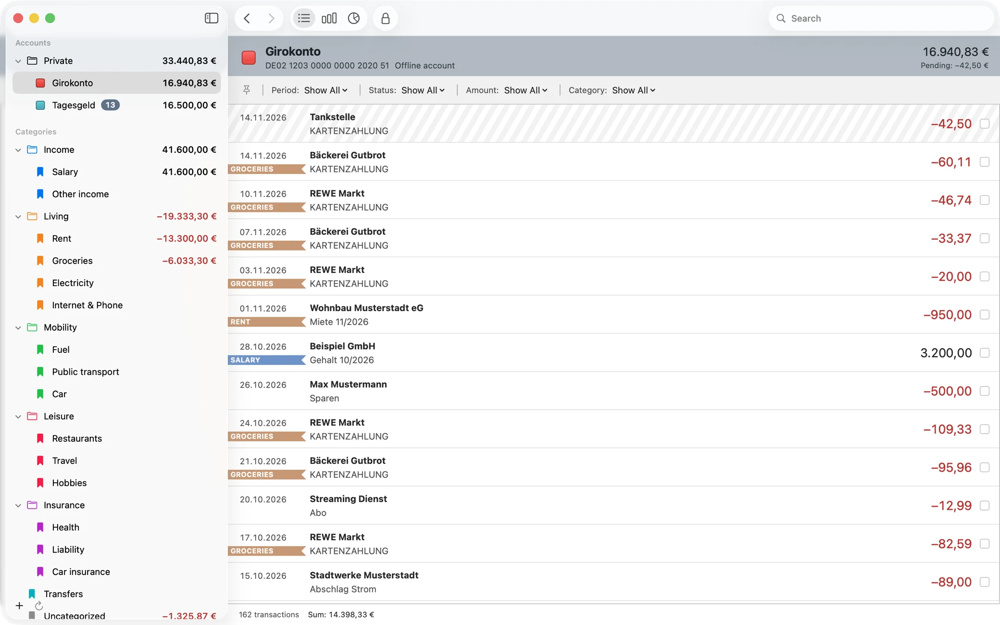
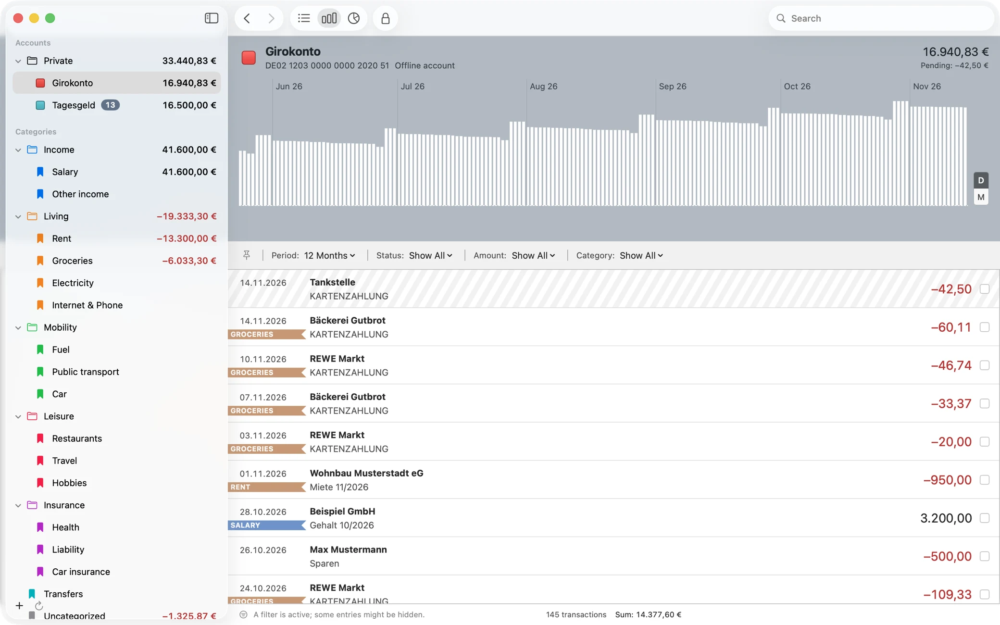

Lokal und verschlüsselt
Alle Daten liegen in einer mit SQLCipher verschlüsselten Datenbank auf deinem Mac. Es gibt kein Benutzerkonto, keine Telemetrie und keinen Server, der deine Finanzdaten speichert.
Frühe Entwicklungsphase · noch kein Release
Moneten ist eine Open-Source-Banking-App für macOS. Sie holt deine Umsätze, ordnet sie in Kategorien und zeigt, wohin dein Geld geht. Ohne Konto und ohne Telemetrie. Deine Daten bleiben auf deinem Mac.

Moneten ist eine native Mac-App in Swift und SwiftUI. Sie ist für Menschen gebaut, die Konten bei mehreren deutschen Banken und Brokern haben und ihre Finanzdaten nicht auf fremden Servern sehen wollen.
Alle Daten liegen in einer mit SQLCipher verschlüsselten Datenbank auf deinem Mac. Es gibt kein Benutzerkonto, keine Telemetrie und keinen Server, der deine Finanzdaten speichert.
Moneten spricht FinTS, die Standardschnittstelle deutscher Banken, mit pushTAN, photoTAN und chipTAN. Kostenlos und direkt eingebaut, ohne Umweg über einen Dienstleister. Die ersten Tests mit echten Banken laufen.
Kreditkarten, PayPal, Broker oder Krypto-Börsen kommen über Extensions dazu. Moneten soll die meisten Extensions für MoneyMoney ohne Änderungen ausführen. Drei veröffentlichte laufen in den Tests schon unverändert.
Sortiere Umsätze in einen Baum aus Kategorien und Gruppen. Jede Kategorie kann eine Regel haben, einen Suchausdruck, der neue Umsätze automatisch einordnet.
Sieh den Verlauf deiner Salden und deine Ausgaben nach Kategorie. Suche und Filter grenzen die Umsätze eines Kontos, einer Gruppe oder einer Kategorie ein, etwa nach Zeitraum oder Betrag.
Übernimm Konten, Kategorien und Umsätze aus MoneyMoney. Kontoauszüge im Format CSV, CAMT oder MT940 importierst du ohne doppelte Buchungen.
Moneten rechnet direkt auf deinem Mac. Beträge werden auf den Cent genau als ganze Zahlen gespeichert, und Summen über verschiedene Währungen werden nie heimlich umgerechnet.

Eine Extension ist ein kleines Lua-Skript, das Konten, Salden und Umsätze von einem Dienst abruft: einer Kreditkarte, PayPal, einem Broker oder einer Bank im Ausland. Die Schnittstelle ist mit der Web-Banking-API von MoneyMoney kompatibel. Der Katalog steht noch am Anfang und füllt sich mit jeder geprüften Extension.
Extensions rufen Daten ab. Die Schnittstelle hat keine Funktionen für Zahlungen. Überweisungen wird Moneten nur über FinTS oder das optionale Abo mit finAPI senden.
Automatische Prüfungen und ein Maintainer sehen sich jede neue Extension und jedes Update an. Eine Extension spricht nur mit den Servern aus ihrem Manifest, immer über HTTPS.
Moneten prüft die Signatur des Katalogs und die Prüfsumme jeder Datei, bevor es eine Extension installiert oder ausführt. Jede Extension läuft in einem eigenen, abgeschotteten Prozess.
Moneten ist noch nicht fertig, und es gibt noch kein Release. Jedes Verhalten der App ist vorab als Anforderung mit prüfbaren Szenarien beschrieben. Der Code folgt Schritt für Schritt.
Eine Bank über FinTS mit pushTAN anbinden, Umsätze abrufen, mit Regeln kategorisieren, Diagramme sehen, aus MoneyMoney umziehen und Extensions aus dem Katalog nutzen.
SEPA-Überweisungen über FinTS mit Empfängerüberprüfung und TAN, dazu die Bestände von Depots.
Ein optionales Abo bindet Banken ohne FinTS über finAPI an. Alle Funktionen von v0.1 und v0.2 bleiben ohne Abo kostenlos.
Moneten ist freie Software unter der GNU General Public License. Jede und jeder kann den Code lesen, bauen, prüfen und verändern. Das Projekt sucht Swift-Entwicklerinnen und -Entwickler, Leute mit Erfahrung in FinTS und Autorinnen und Autoren von Extensions.